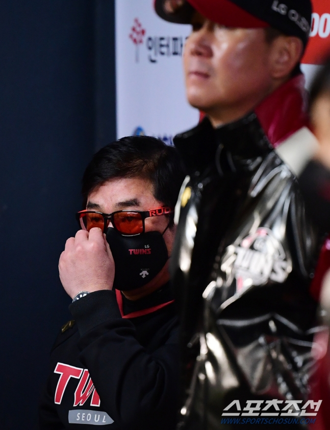

'더 높은 곳'에 실패한 류중일 감독, 소멸된 재계약 명분
기사입력 2020.11.06. 오전 07:06 | 최종수정 2020.11.06. 오전 11:44

2020 KBO리그 LG와 두산의 준PO 1차전이 잠실구장에서 열렸다. 류중일 감독이 경기를 지켜보고 있다. 잠실=정재근 기자 cjg@sportschosun.com/2020.11.04
[잠실=스포츠조선 노재형 기자] LG 트윈스가 5일 두산 베어스에 7대9로 패하며 시리즈 전적 2패로 플레이오프 진출에 실패했다. 3년 계약이 만료된 류중일 감독의 거취가 초미의 관심이다. 이날 LG는 4회에만 안일한 마운드 운영으로 7실점하는 '졸전'으로 경기를 내줬다.
류 감독은 2017년 10월 LG와 3년 21억원에 계약해 올해가 계약 마지막 시즌이다. LG는 준플레이오프를 끝으로 올해 일정을 사실상 마무리했기 때문에 류 감독의 재계약 여부를 곧 결정해야 한다.
LG 구단과 류 감독은 올시즌 개막 전 "작년보다 더 높은 곳에 오르겠다"고 자신있게 밝힌 바 있다. LG는 류 감독 부임 첫 시즌인 2018년 페넌트레이스 8위에 그치며 포스트시즌에 오르지 못했다. 그러나 지난해 페넌트레이스 4위로 3년 만에 가을야구 무대에 섰고, 와일드카드 결정전에서 NC 다이노스를 꺾고 준플레이오프까지 오르는 성과를 이뤘다.
자연스럽게 LG는 올해 적어도 플레이오프, 나아가 한국시리즈 진출을 궁극의 목표로 삼았다. 명문화한 사항은 아니지만, 프런트와 선수단, 그리고 류 감독이 직접 언급했던 사실이다. 더구나 올해는 LG 그룹이 MBC 청룡을 인수해 트윈스를 창단해 리그에 참여한 지 30주년이 되는 해다.
류 감독은 올초 신년 행사에서 "느낌이 좋다. 트윈스 창단 30주년, 팬들께 좋은 선물 드리겠다"고 희망의 메시지를 던지며 "작년보다 높은 곳으로 갈 수 있도록 최선을 다하겠다. 내 계약 연장을 떠나서 이 팀이 늘 5강에 들어가도록 만들어가야 한다는 게 소신"이라며 각오를 밝힌 바 있다. 지난해 4위를 했으니 올해는 우승을 다툴 위치까지 올라야 타당하다는 얘기였다.
그러나 결과적으로 목표 달성에는 실패했다. 항상 결과론이라고 하면서도, 결과로 밖에 평가받을 수밖에 없는 것이 프로야구의 세계다. KBO리그의 생존 논리를 가장 아는 이가 바로 류 감독이다. 고향팀 삼성 라이온즈에서 4차례 통합 우승을 일군 명장의 입에서 다른 얘기는 나올 수 없다. 내심 우승까지도 가보겠다는 목표를 밝힌 것이다. 하지만 목표와는 한참 거리가 먼 성적표를 받아들고 말았다. 재계약 명분이 소멸된 것이다.
준플레이오프에서 두산에 패한 것은 사실 의미가 크지 않다. '실패한 시즌'이라고 봐야 하는 시점은 2위 싸움을 한창 벌이던 후반기 막판이다. LG는 9월 10일까지 NC 다이노스에 2게임 차 뒤진 2위를 달리고 있었다. 그러나 이후 9월 30일까지 17경기에서 7승10패로 하락세를 그리며 4위로 떨어졌다. 10패 가운데 5패가 불펜진이 리드를 지키지 못하고 역전패한 것이었다. 벤치의 불펜 운용이 여론 도마에 올랐다.
그러나 LG는 이를 만회라도 하려는 듯 10월 들어 상승세로 돌아서더니 10월 9~11일 NC와의 홈 4연전을 모두 쓸어담으며 다시 2위로 올라섰고, 10월 20일 2위 경쟁팀 KT 위즈를 꺾으며 플레이오프 직행을 확정짓는 듯했다. 그러나 시즌 마지막 2경기에서 최약체 한화 이글스와 SK 와이번스에 허무하게 무너지며 순식간에 4위로 곤두박질했다. 한 시즌 농사를 제대로 마무리하지 못해 와일드카드부터 가을야구를 벌여야 하는 처지가 됐다. 페넌트레이스 운영, 단기전 용병술에 있어 최고 수준을 자랑하는 류 감독으로서도 자존심 상하는 결과였다.
올시즌 내내 LG 구단의 류 감독에 대한 평가는 매우 긍정적이었다. 부상 선수가 속출하는 어려움 속에서도 상위권을 꾸준히 유지하며 선수단 관리 및 유망주 육성 등에서 일정 부분 성과를 냈기 때문이다. 지난해 고우석 정우영, 올해 이민호 김윤식 등 스무살 안팎의 젊은 투수들을 키워낸 건 프런트와 류 감독의 합작이라고 해도 과언이 아니다. 게다가 류 감독은 LG 지휘봉을 잡은 이후 가장 좋은 5할6푼4리의 승률을 올렸다.
하지만 지난해와 똑같은 결과를 가지고는 재계약을 논하기가 매우 힘들다. LG 구단은 류 감독의 재계약 여부를 곧 결정할 것으로 보인다.
잠실=노재형 기자 jhno@sportschosun.com
류 감독은 2017년 10월 LG와 3년 21억원에 계약해 올해가 계약 마지막 시즌이다. LG는 준플레이오프를 끝으로 올해 일정을 사실상 마무리했기 때문에 류 감독의 재계약 여부를 곧 결정해야 한다.
LG 구단과 류 감독은 올시즌 개막 전 "작년보다 더 높은 곳에 오르겠다"고 자신있게 밝힌 바 있다. LG는 류 감독 부임 첫 시즌인 2018년 페넌트레이스 8위에 그치며 포스트시즌에 오르지 못했다. 그러나 지난해 페넌트레이스 4위로 3년 만에 가을야구 무대에 섰고, 와일드카드 결정전에서 NC 다이노스를 꺾고 준플레이오프까지 오르는 성과를 이뤘다.
자연스럽게 LG는 올해 적어도 플레이오프, 나아가 한국시리즈 진출을 궁극의 목표로 삼았다. 명문화한 사항은 아니지만, 프런트와 선수단, 그리고 류 감독이 직접 언급했던 사실이다. 더구나 올해는 LG 그룹이 MBC 청룡을 인수해 트윈스를 창단해 리그에 참여한 지 30주년이 되는 해다.
류 감독은 올초 신년 행사에서 "느낌이 좋다. 트윈스 창단 30주년, 팬들께 좋은 선물 드리겠다"고 희망의 메시지를 던지며 "작년보다 높은 곳으로 갈 수 있도록 최선을 다하겠다. 내 계약 연장을 떠나서 이 팀이 늘 5강에 들어가도록 만들어가야 한다는 게 소신"이라며 각오를 밝힌 바 있다. 지난해 4위를 했으니 올해는 우승을 다툴 위치까지 올라야 타당하다는 얘기였다.
그러나 결과적으로 목표 달성에는 실패했다. 항상 결과론이라고 하면서도, 결과로 밖에 평가받을 수밖에 없는 것이 프로야구의 세계다. KBO리그의 생존 논리를 가장 아는 이가 바로 류 감독이다. 고향팀 삼성 라이온즈에서 4차례 통합 우승을 일군 명장의 입에서 다른 얘기는 나올 수 없다. 내심 우승까지도 가보겠다는 목표를 밝힌 것이다. 하지만 목표와는 한참 거리가 먼 성적표를 받아들고 말았다. 재계약 명분이 소멸된 것이다.
준플레이오프에서 두산에 패한 것은 사실 의미가 크지 않다. '실패한 시즌'이라고 봐야 하는 시점은 2위 싸움을 한창 벌이던 후반기 막판이다. LG는 9월 10일까지 NC 다이노스에 2게임 차 뒤진 2위를 달리고 있었다. 그러나 이후 9월 30일까지 17경기에서 7승10패로 하락세를 그리며 4위로 떨어졌다. 10패 가운데 5패가 불펜진이 리드를 지키지 못하고 역전패한 것이었다. 벤치의 불펜 운용이 여론 도마에 올랐다.
그러나 LG는 이를 만회라도 하려는 듯 10월 들어 상승세로 돌아서더니 10월 9~11일 NC와의 홈 4연전을 모두 쓸어담으며 다시 2위로 올라섰고, 10월 20일 2위 경쟁팀 KT 위즈를 꺾으며 플레이오프 직행을 확정짓는 듯했다. 그러나 시즌 마지막 2경기에서 최약체 한화 이글스와 SK 와이번스에 허무하게 무너지며 순식간에 4위로 곤두박질했다. 한 시즌 농사를 제대로 마무리하지 못해 와일드카드부터 가을야구를 벌여야 하는 처지가 됐다. 페넌트레이스 운영, 단기전 용병술에 있어 최고 수준을 자랑하는 류 감독으로서도 자존심 상하는 결과였다.
올시즌 내내 LG 구단의 류 감독에 대한 평가는 매우 긍정적이었다. 부상 선수가 속출하는 어려움 속에서도 상위권을 꾸준히 유지하며 선수단 관리 및 유망주 육성 등에서 일정 부분 성과를 냈기 때문이다. 지난해 고우석 정우영, 올해 이민호 김윤식 등 스무살 안팎의 젊은 투수들을 키워낸 건 프런트와 류 감독의 합작이라고 해도 과언이 아니다. 게다가 류 감독은 LG 지휘봉을 잡은 이후 가장 좋은 5할6푼4리의 승률을 올렸다.
하지만 지난해와 똑같은 결과를 가지고는 재계약을 논하기가 매우 힘들다. LG 구단은 류 감독의 재계약 여부를 곧 결정할 것으로 보인다.
잠실=노재형 기자 jhno@sportschosun.com
▶2021 신축년(辛丑年) 신년 운세 보러가기